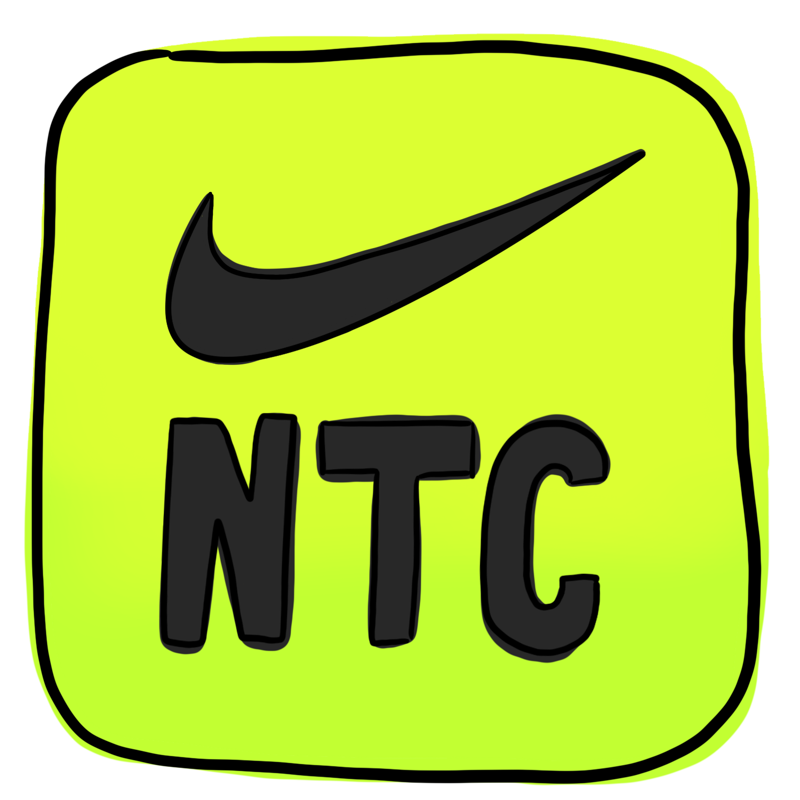
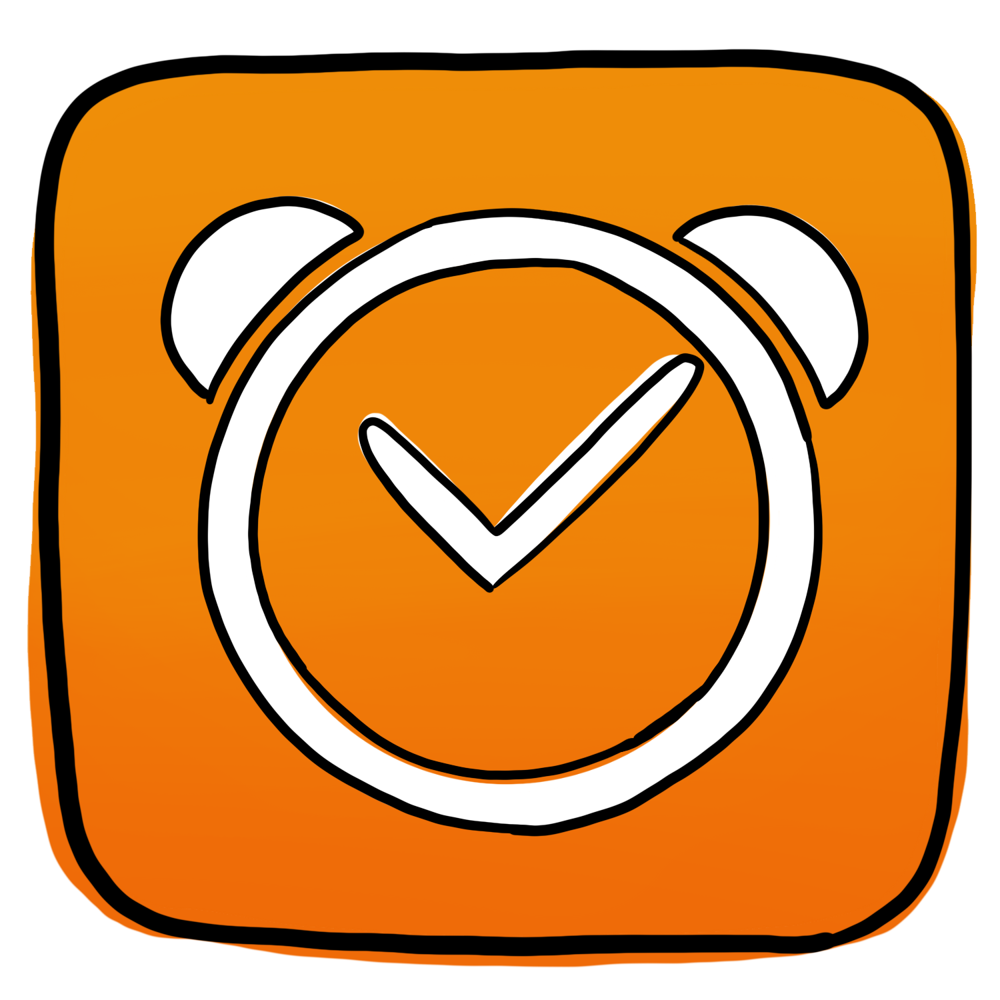

Physical Self Care
You’ve got more tasks on your to-do list than cruella had dalmations, we know. We’re just asking for a sliver of your time -one dalmation really. Your health is important, so we’ve rounded up two apps to help you, the least you could do is try.
Nike Training Club App
Workout and Fitness Plans
We know you’ve got alot on your plate, your work-life balance has become more of an imbalance. This app from Nike takes the thinking out of working out, with tons of quick and effective workouts at your fingertips it’s a covienent way to fit fitness back into your schedule.
The excuses stop here.
Sleep Cycle App
Sleep Tracker and Alarm Clock
That three hour nap that you think qualifies as a full night’s rest has met its match. This sleep tracking app not only analyizes your sleep, but it also works as an alarm clock that wakes you up when you’re in your lightest phase of sleep. No more waking up tired and spending your rent on coffee.
A good night's sleep starts here.